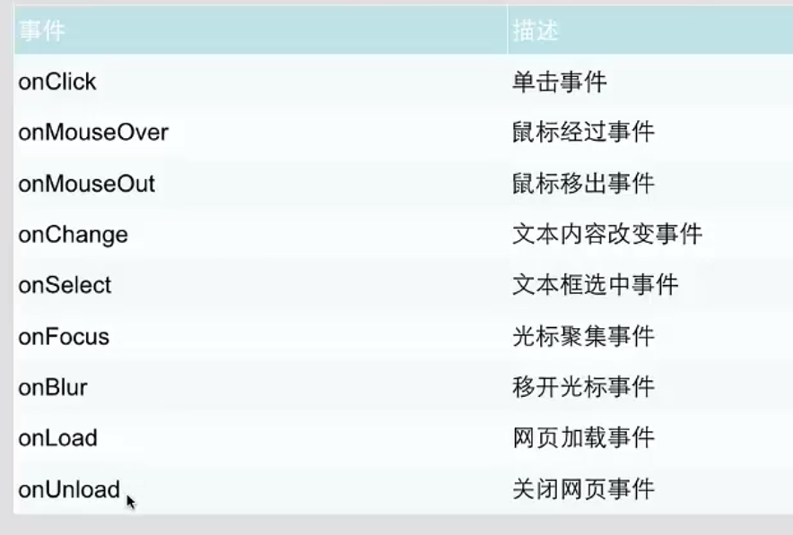

hello
i = 20 , j = 10 , 问：
i+j=
结果
i -j=
结果
i *j=
结果
i /j=
结果
i%j=
结果
j = i++ ,j=
结果
j = ++ i ,j=
结果
var zsd2_i8 = "20";
var zsd2_j8 = 20;
document.write(zsd2_i8==zsd2_j8);
var zsd2_i9 = "20";
var zsd2_j9 = 20;
document.write(zsd2_i9===zsd2_j9);
var zsd2_i10 = 10;
document.write(zsd2_i10>20? "i>20":"i<20");
var zsd3_i1 = 18;
if (zsd3_i1<=10){
document.write("此时i<=10");
}else if (zsd3_i1<=20) {
document.write("此时i>10且i<=20");
}else {
document.write("此时i>20");
}
var zsd4_i1 = 8;
switch (zsd4_i1) {
case 1 :
document.write("i=1");break;
case 2 :
document.write("i=2");break;
case 3 :
document.write("i=3");break;
case 4 :
document.write("i=4");break;
case 5 :
document.write("i=5");break;
default: //不满足所有条件
document.write("i不满足所有条件");break;
}
var zsd5_i1 = 10;
for (var zsd5_j1=0;zsd5_j1<=zsd5_i1;zsd5_j1++){
document.write(zsd5_j1);
}
var zsd5_arr = [0,1,2,3,4,5,6,7,8,9,10];
for (var zsd5_j2=0;zsd5_j2<=10;zsd5_j2++){
document.write(zsd5_arr[zsd5_j2]);
}
var zsd5_j3; //for in 用法
for (zsd5_j3 in zsd5_arr){
document.write(zsd5_arr[zsd5_j3]+"、");
}
var zsd6_i1 = 0; //先判断后执行
while (zsd6_i1<=10){
document.write(zsd6_i1+"、");
zsd6_i1++;
}
var zsd6_i2 = 11; //do..while先执行后判断
do {
document.write(zsd6_i2+"、");
zsd6_i2++;
}while (zsd6_i2<=20)
for (var zsd7_i1 = 0;zsd7_i1<10;zsd7_i1++){
if (zsd7_i1==3){
continue; //跳出本次循环，进入下次循环
}else if (zsd7_i1==7){
break; //跳出循环，循环结束
}else {
document.write(zsd7_i1+"、");
}
}
<p>i=10 ,j=20 ,请问i+j = ?</p>
<button onclick="zsd8_fun1(11,20)">结果</button> //zsd8_fun1()调用函数，且传递参数
<button onclick="zsd8_fun1(30,40)">结果</button> //可以无数次引用函数
<button onclick="zsd8_fun2('bo',21)">自我介绍</button> //传递字符串
<script>
function zsd8_fun1(zsd8_i1,zsd8_j1) { //定义函数
var zsd8_sum1 = zsd8_i1+zsd8_j1;
alert(zsd8_sum1);
}
function zsd8_fun2(name,age) {
alert("大家好，我叫"+name+",今年"+age+"岁,"+"很高心和大家在这里见面");
}
</script>
i=10 ,j=20 ,请问i+j = ?
结果
结果
自我介绍
<p>a = 10 ,b = 20 ,问a和b哪个比较大？</p>
<p id="zsd9_p1"></p>
<button onclick="zsd9_fun2(10,20)">查看结果</button>
<button onclick="zsd9_fun1(10,20)">查看比较结果</button>
<script>
function zsd9_fun1(zsd9_i1,zsd9_j1) {
if(zsd9_i1>zsd9_j1){
return alert("a比b大"); //可以返回数字，也可以返回字符串和命令等；
}else {
return alert("b比a大");
}
}
function zsd9_fun2(zsd9_i2,zsd9_j2){
if(zsd9_i2>zsd9_j2){
zsd9_sum = "a比b大";
}else {
zsd9_sum = "b比a大";
}
document.getElementById("zsd9_p1").innerHTML=zsd9_sum;
}
</script>
a = 10 ,b = 20 ,问a和b哪个比较大？
查看结果
查看比较结果
function zsd10_fun1 () {
try {
alert(skr);
}catch (err) {
alert(err);
}
}
点击查看异常
自定义异常
function zsd10_fun2() {
try {
var zsd10_input1_text = document.getElementById("zsd10_input1").value; //获取输入值
if(zsd10_input1_text == ""){ //判断输入值是否为空
throw "请输入文字"; //自定义输出异常
}
}catch (err) {
alert(err);
}
}

内容1：鼠标经过和移出事件
<div id="zsd11_div1" onmouseover="zsd11_onOver1(this)" onmouseout="zsd11_onOut1(this)"></div>
<script>
function zsd11_onOver1(ojj) {
ojj.innerHTML="开灯";
ojj.style.background = "#00ffff";
}
function zsd11_onOut1(ojj) {
ojj.innerHTML="关灯";
ojj.style.background = "cadetblue";
}
</script>
内容2：文本内容改变事件
<form>
<input type="text" onchange="zsd11_onChange(this)">
</form>
<script>
function zsd11_onChange(bg) {
bg.style.background = "cadetblue"; //改变背景颜色.style.background=""
}
</script>
内容3：文本框选中事件
<form>
<input type="text" onselect="zsd11_onselect1(this)">
</form>
<script>
function zsd11_onselect1(ojj) {
ojj.style.background = "blue";
}
</script>
内容4：光标聚集事件
<form>
<input type="text" onfocus="zsd11_onFocus(this)"placeholder="请输入">//光标聚集事件、placehoder为模糊显示
</form>
<script>
function zsd11_onFocus(ojj) {
ojj.style.background = "blue"
}
</script>
知识点十二：DOM操作HTML
改变内容
<p id="zsd12_p1">我是原来的</p>
<button onclick="zsd12_fun1()">点击改变</button>
<script>
function zsd12_fun1() {
document.getElementById("zsd12_p1").innerHTML = "我是改变后的"; //通过id找到html元素
}
</script>
我是原来的
点击改变
改变元素
<a id="zsd12_a1" href="http://www.baidu.com">现在是百度</a>
<button onclick="zsd12_fun2()">点击改变</button>
<script>
function zsd12_fun2() {
document.getElementById("zsd12_a1").innerHTML="现在是淘宝";
document.getElementById("zsd12_a1").href="http://www.taobao.com"; //获取id后改变元素
}
</script>
现在是百度
点击改变
知识点十三：DOM操作CSS
<div id="zsd13_div1"><p id="zsd13_p1">改变前</p></div>
<button onclick="zsd13_fun1()">点击改变</button>
<script>
function zsd13_fun1() {
document.getElementById("zsd13_div1").style.color="blue"; //改变字体颜色
document.getElementById("zsd13_p1").innerHTML="改变后"; //改变文字
document.getElementById("zsd13_div1").style.background="red"; //改变背景
}
</script>
点击改变
知识点十四：DOM EventListner事件句柄
<button id="zsd14_btn1">按钮</button> //设置id即可
<script>
function zsd14_fun1() {
alert("hello");
}
function zsd14_fun2() {
alert("world");
}
document.getElementById("zsd14_btn1").addEventListener("mouseover",zsd14_fun1); //添加鼠标移过则触发函数
document.getElementById("zsd14_btn1").addEventListener("click",zsd14_fun1); //添加点击则触发函数
document.getElementById("zsd14_btn1").addEventListener("click",zsd14_fun2);
document.getElementById("zsd14_btn1").removeEventListener("mouseover",zsd14_fun1); //移除
</script>
按钮
知识点十五：事件流
<button id="zsd15_btn">按钮</button>
<script>
function zsd15_fun1() {
alert("DOM0级事件支持浏览器");
}
function zsd15_fun2() {
alert("DOM2级事件支持浏览器");
}
function zsd15_fun3() {
alert("IE事件支持浏览器");
}
var zsd15_btn = document.getElementById("zsd15_btn");
if(zsd15_btn.addEventListener){ //判断浏览器是否支持DOM2级事件处理
zsd15_btn.addEventListener("click",zsd15_fun2);
}else if (zsd15_btn.attachEvent){ //判断浏览器是否支持DOM0级事件处理
zsd15_btn.attachEvent("click",zsd14_fun1);
}else { //都不支持，则IE处理
zsd15_btn.onclick = zsd15_fun3();
}
</script>
按钮
知识点十六：事件对象
内容一：type获取事件类型
<div id="zsd16_div1">
<button id="zsd16_btn1">获取事件类型按钮</button>
<button id="zsd16_btn2">获取事件目标按钮</button>
<a href="http://baidu.com" id="zsd16_a1">点击后不会跳转</a>
</div>
<script>
var zsd16_btn1 = document.getElementById("zsd16_btn1");
var zsd16_btn2 = document.getElementById("zsd16_btn2");
var zsd16_div1 = document.getElementById("zsd16_div1");
zsd16_btn1.addEventListener("click",zsd16_fun1);
zsd16_btn2.addEventListener("click",zsd16_fun2);
zsd16_div1.addEventListener("click",zsd16_fun3);
document.getElementById("zsd16_a1").addEventListener("click",zsd16_fun4);
function zsd16_fun1(event) {
alert(event.type); //获取事件类型
event.stopPropagation(); //阻止事件冒泡
}
function zsd16_fun2(event) {
alert(event.target); //获取事件目标
event.stopPropagation(); //阻止事件冒泡
}
function zsd16_fun3() {
alert("我是事件冒泡后显示的"); //事件冒泡验证
}
function zsd16_fun4(event) {
event.preventDefault(); //阻止a标签的默认事件执行
}
</script>
知识点十七：内置对象-创建对象
方式一
<script>
zsd17_people1 = new Object(); //创建people对象，new为关键字，Object为最大的对象，其他的是他的附类
zsd17_people1.name = "bo"; //自定义对象的属性
zsd17_people1.age = "70" ;
document.write("name: "+zsd17_people1.name+" age: "+zsd17_people1.age);
</script>
方式二
<script>
zsd17_people2 = {name:"bo",age:"70"}; //创建对象并赋值属性
document.write("name: "+zsd17_people1.name+" age: "+zsd17_people1.age);
</script>
方式三
<script>
function zsd17_people(name,age) {
this._name = name; //自定义属性
this._age = age;
}
zsd17_people3 = new zsd17_people("bo",70); //创建对象
document.write("name: "+zsd17_people3._name+" age: "+zsd17_people3._age)
</script>
知识点十八：String字符串对象
hello,快来计算我r的长度吧
<script>
var zsd18_string1 = "hello,快来计算我r的长度吧";
document.write("长度为："+zsd18_string1.length); //查看字符串长度
document.write("<br/>r是否存在存在则输出位置，不存在输出-1："+zsd18_string1.indexOf("r")); //查看字符串
document.write("<br/>r是否存在，存在则匹配出来，不存在则输出null："+zsd18_string1.match("r"));//内容匹配
document.write("<br/>修改字符串："+zsd18_string1.replace("长度","宽度")); //修改字符串
document.write("转换成大写："+zsd18_string1.toUpperCase()); //toUpperCase()转换成大写，toLowerCase()转换成小写
var zsd18_string2 = "hello,feng,yong,bo,de,boke";
var zsd18_arr = zsd18_string2.split(","); //split转换成数组，分割符为，可任意设定
var zsd18_arrLenth = zsd18_arr.length;
for (var i=0;i<zsd18_arrLenth;i++){
if(i==0){
document.write("<br/>"+zsd18_arr[i].toUpperCase()+" ");
}else{
document.write(zsd18_arr[i]+" ");
}
}
</script>
知识点十九：内置对象-Date对象
知识点二十：内置对象-Array数组对象
属性一：concat数组结合
属性二：sort排序
升序
倒序
属性三：push追加数组
属性四：reverse翻转
知识点二十一：内置对象-Math对象
属性一：round四舍五入
属性二：random随机数
属性三：max,min最大最小值
属性四：abs绝对值
知识点二十二：DOM(Document Object Model文档对象模型)对象控制HTML元素详解
属性一：getElementsByName获取名字name
hello
hello
hello
hello
属性二：getElementsByTagName获取名字的元素
wold
world
wrld
属性三：getAttribute获取元素的属性
属性四：setAttribute设置元素属性
属性五：childNodes访问子节点
你好啊，我是子节点1
你好啊，我是子节点2
nihao
你好啊，我是子节点3
属性六：parentNodes访问父节点
属性七：createElement创建新节点
属性八：insertBefore插入节点
属性九：removeChild删除节点
属性十：offsetHeight网页尺寸（不包括滚动条）
a
a
a
a
a
a
a
a
a
a
a
a
a
a
a
属性十一：scrollHeight网页尺寸（包括滚动条）
a
a
a
a
a
a
a
a
a
a
a
a
a
a
a
知识点二十三：浏览器对象-window对象
打开新窗口
关闭当前窗口
知识点二十四：浏览器对象-计时器
计时方法一：setInterval间隔指定的毫秒不断执行指定代码
查看时间
点击停止
计时方式二：setTimeout等待指定毫秒执行指定代码
1秒后弹出当前时间
查看时间
点击停止
知识点二十五：浏览器对象-History对象
属性一：history.back()返回，history.forward前进
跳转到下个页面
点击前进到下个页面
属性二：history.go()跳转到特定页面
请点击到登陆页面
登陆
知识点二十六：浏览器对象-Location
属性一：hostname返回主机名称
点击按钮显示当前主机名
按钮
属性二：pathname返回当前地址
点击按钮显示当前地址
按钮
属性三：port返回当前端口
点击按钮显示当前端口
按钮
属性四：protocol返回当前协议
点击按钮显示当前协议
按钮
属性五：href返回当前URL
点击按钮显示当前URL
按钮
属性六：assign加载新的文档
点击按钮加载新的文档
按钮
知识点二十七：浏览器对象-Screen对象